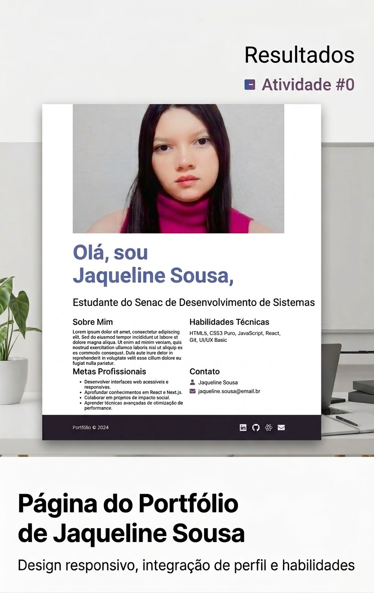

Olá Mundo! Sou a Jaqueline, Estudante do Senac de Desenvolvimento de Sistemas.
Está landing page é um projeto desenvolvido em sala com os melhores alunos e professor do melhor curso do Senac-DF, utilizando tecnologias frontend HTML, CSS e JavaScript. Cada linha reflete minha paixão por continuar estudando nessa area.
FOCO ATUAL - Flexbox, Grid & Semântica
Construindo consistência diária no código e refinando alinhamentos visuais na tela.
.png)
O que aprendi até agora
Passo a passo, considerando as bases da web para construir páginas acessíveis e agradáveis
HTML Semântico
Uso de tags corretas como <main>, <article>, estruturação de cabeçalhos e formulários acessíveis com labels claras e semãntica pura.
CSS Moderno
Entendimento completo do Modelo de Caixas(Box Model), seletores especificos, variáveis nativas (Custom Properties), tipografia balanceada e contrastes seguros.
Design Responsivo
Criação de interfaces que se adaptam naturalmente a telas de smartphones, tablets e notebooks por meio de flexbox e media queries fluídas.
REFLEXÃO DO APRENDIZADO
" A transição para tecnologia me ensinou que errar a sintaxe faz parte do processo. Cada erro no console é apenas uma oportunidade de entender a web mais a fundo."
Jaqueline SousaEstudante de Desenvolvimento de Sistemas
Projetos & Experimentos
Resultados reais dos exercicios propostos neste primeiro módulo de aprendizado.

Landing Page Pessoal
Meu primeiro desafio individual: estruturação semântica limpa, hierarquia de títulos rigorosa e estilização customizada sem frameworks.
Formulário de Cadastro Acessível
Campos estilizados com foco explícito em usabilidade, contraste de cores e validações visuais com mensagens nativas do navegador.
Clone de Card de Produto
Exxercício prático de hierarquia visual, espaçamento de elementos internos e sombras sutis utilizando as propriedades de flexbox.